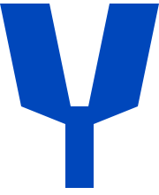
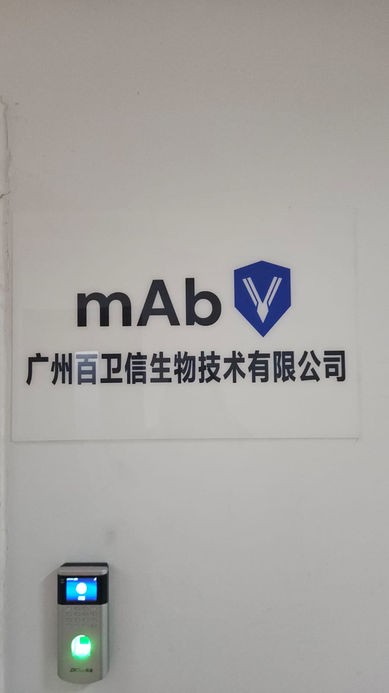
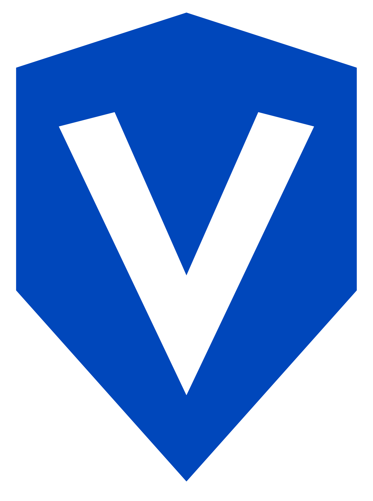
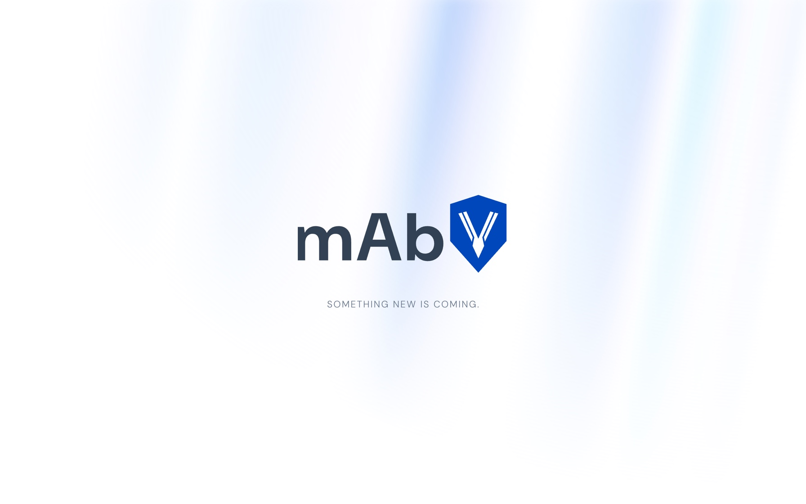
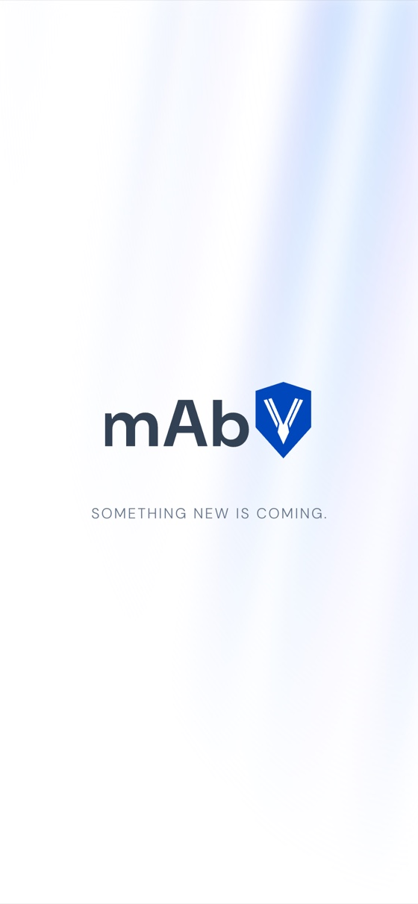

Identity, design system and brand kit for a new antibody company.

From the founder's sketch to a final mark
I developed the mark from the founder's first sketch into the final system: four bars and a teardrop stem, set in a pointed shield. On the way it was tested against ten other routes, at three sizes and on navy.

The founder's sketch
Redrawn as the starting point
Pointed shield
Shield routes

Double track
Antibody arms

Solid Y with stem
Full antibody

Shield and antibody
Hybrids
Final mark
In use today
Five of the eleven routes from the comparison, then the final mark. Top: large, on white. Bottom: small, on navy.
One mark, read in English and Chinese
In China the company trades as 百卫信. I set the characters in Noto Sans SC Bold, matched in weight to the DM Sans wordmark and licensed for commercial use, then outlined every lockup so it looks the same on any device.
- mAbDM Sans Bold, for Latin
- 百卫信Noto Sans SC Bold, for Chinese
Photo: the reception sign in Guangzhou, with the lockup above the company's registered name.

A design system that shows its rules
Eight sections, live at mabvbio.com, from writing style and colour to logo and icon rules. The rules are shown, not just stated: below 32 px the full mark loses its detail, so it switches to a simple V. The ladder proves it.

Simple V, below 32 px
Full mark, 32 px and up
What I delivered
- The mark, plus a simple version for small sizes
- English and bilingual lockups
- Colour and type specification, with Pantone
- A design system site in eight sections
- A brand kit of 18 files, with a readme in two languages
- The holding page, live at mabvbio.com
Today the identity is in use at the company's offices.


Live at mabvbio.com: the holding page on desktop and phone.